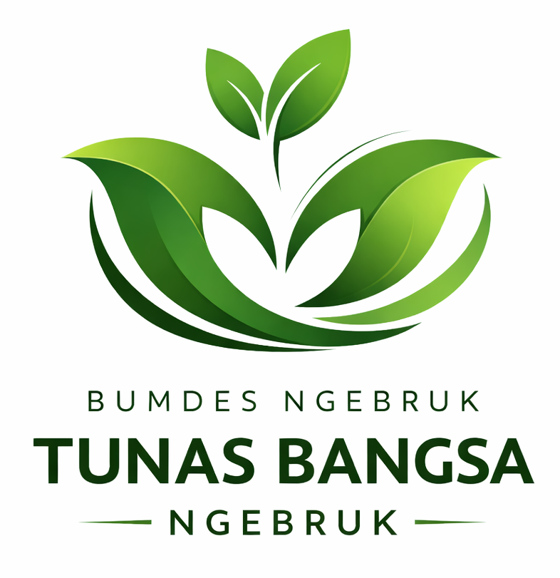

Mandiri, Bersih, Berdaya. "Kami menjaga Air sebagai sumber hayat, mengolah Sampah menjadi manfaat, serta memajukan Pertanian dan Perikanan demi kedaulatan pangan Ngebruk."

BUMDes Ngebruk Tunas Bangsa Ngebruk
Selamat Datang di BUMDes Ngebruk Tunas Bangsa
Badan Usaha yang berkomitmen dalam pengembangan unit-unit penting seperti Air Bersih, Sampah, Pertanian, dan Perikanan untuk kesejahteraan masyarakat.
Unit-Unit Kami
Unit Air Bersih
Melayani kebutuhan air bersih masyarakat dengan teknologi terbaru.
Unit Sampah
Pengelolaan sampah yang ramah lingkungan dan berkelanjutan.
Unit Pertanian
Mendorong pertanian modern dan inovatif untuk meningkatkan hasil panen.
Unit Perikanan
Pengembangan perikanan untuk meningkatkan kesejahteraan nelayan.
"Kami menjaga Air sebagai sumber hayat, mengolah Sampah menjadi manfaat, serta memajukan Pertanian dan Perikanan demi kedaulatan pangan Ngebruk."